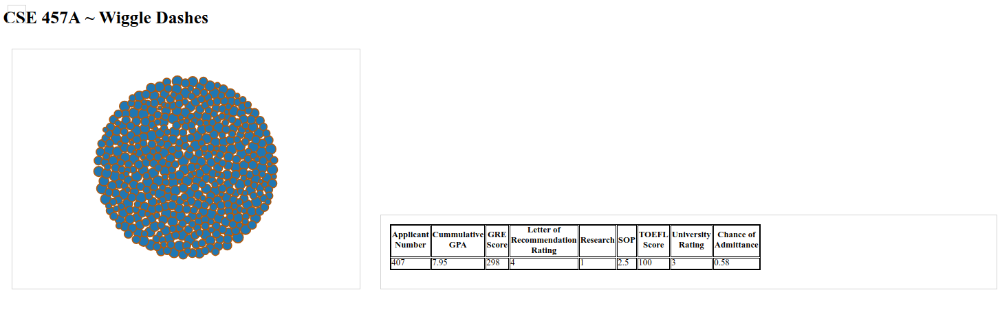
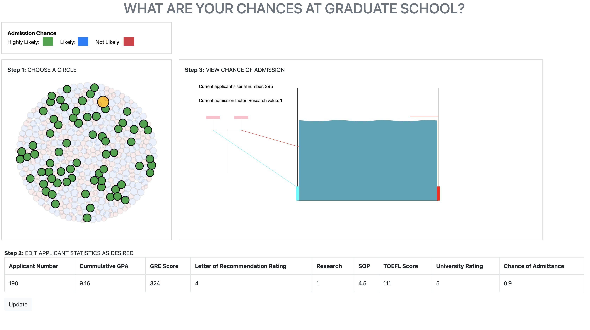
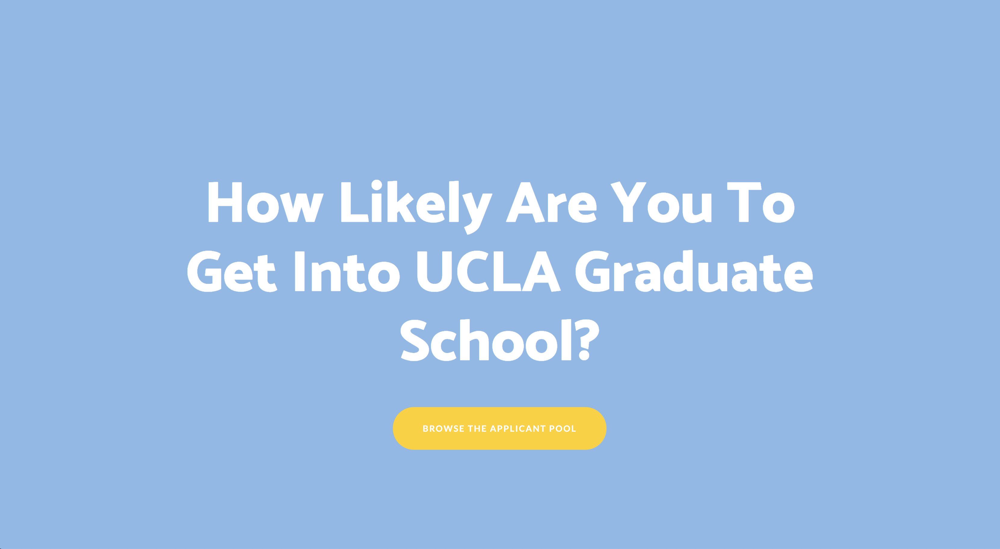
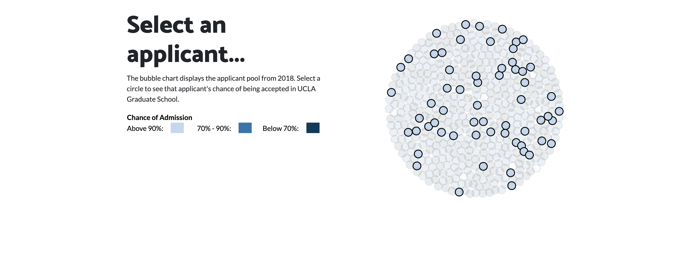
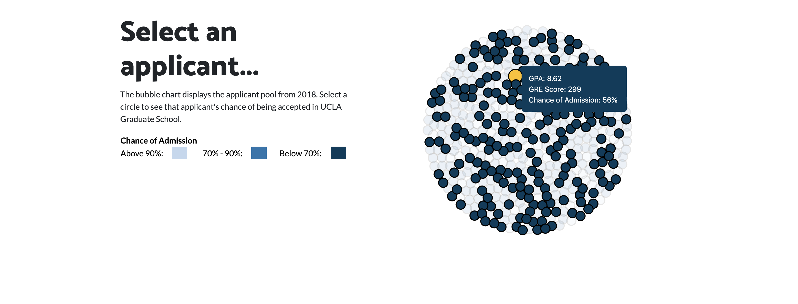
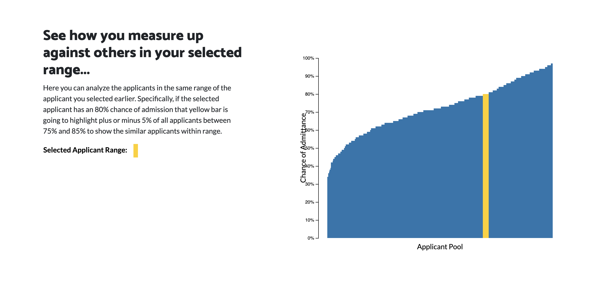
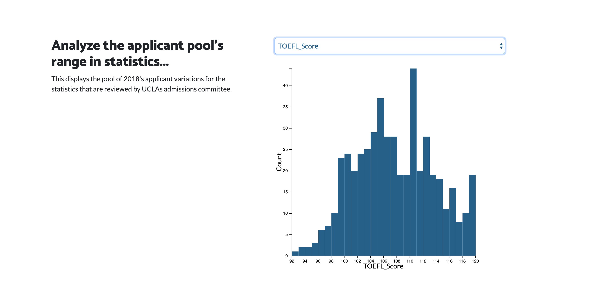
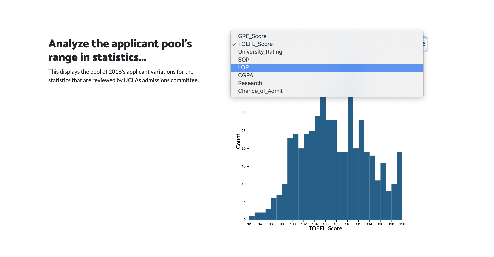
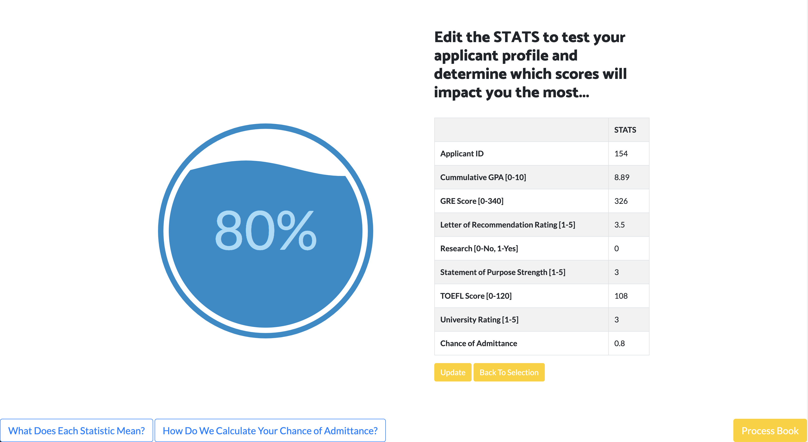
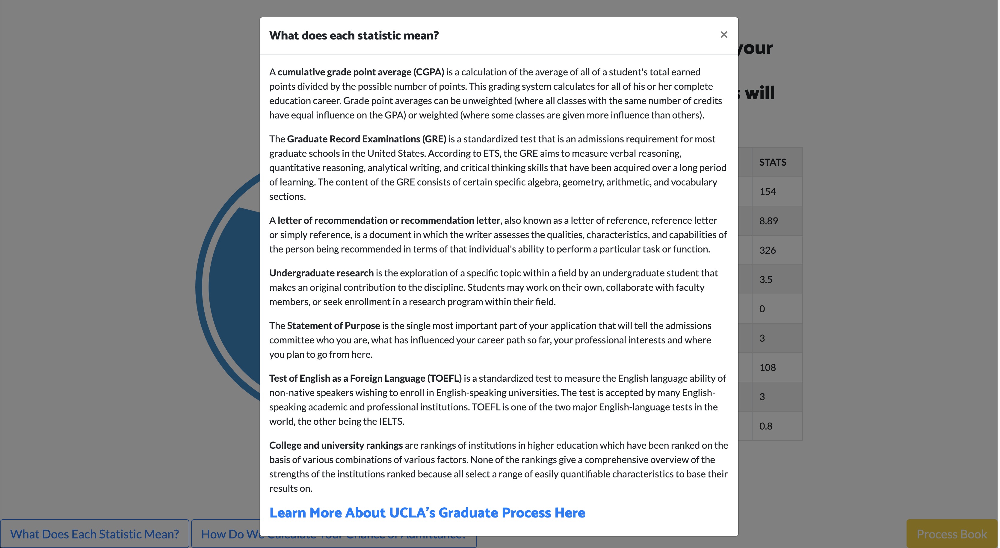

Overview and Motivation
Discuss your motivations and reasons for choosing this project, especially any background or research interests that may have influenced your decision.
College admission statistics, including those for graduate schools are always of great interest and importance for young people who are aspiring for getting better education. We have all gone through numerous applications. Our portfolios have all gone through numerous admission committees. Even though an applicant could evaluate her or his potentials for admissions, for the most part the admission process is a black box that provides little feedback. Finding out what factors lead to admission is certainly an important research topic with practical impacts. It would be very helpful if one could look at past admission data and make an assessment before investing the energy, time and money on an application for a particular school. Sadly, most schools never disclose such data. For those that do, the data might not be intuitive to be understood, More importantly, it is difficult to understand how exactly the measurements for each of the metrics factor into the final admission decision. Thus, we are very excited to start this project to visualize admission data with the aim of building an intuitive representation of the data. We found a dataset from UCLA on Kaggle and we think it is a good start, especially given that there is such a scarcity of admission data and even less visualization with such data.
Data
From where and how are you collecting your data? If appropriate, provide a link to your data sources. Source, scraping method, cleanup, etc.
We found our dataset on Kaggle. It is collected by a person named Mohan S Acharya, as part of his paper on a relevant topic [1].
Link: https://www.kaggle.com/mohansacharya/graduate-admissions.
[1] Mohan S Acharya, Asfia Armaan, Aneeta S Antony : A Comparison of Regression Models for Prediction of Graduate Admissions, IEEE International Conference on Computational Intelligence in Data Science 2019.
For our project we took the dataset and ran a multi variable regression in R and Python in order to extract the relevant factors for calculating applicants chance of admission. This can be found in the data section of the repository.
Visualization Design
How will you display your data? Provide some general ideas that you have for the visualization design. Create three alternative designs for your visualization. Create one final design that incorporates the best of your three designs. Describe your designs and justify your choices of visual encodings. You use the Five Design Sheet Methodology.
College admission statistics, including those for graduate schools are always of great interest and importance for young people who are aspiring for getting better education. We have all gone through numerous applications. Our portfolios have all gone through numerous admission committees. Even though an applicant could evaluate her or his potentials for admissions, for the most part the admission process is a black box that provides little feedback. Finding out what factors lead to admission is certainly an important research topic with practical impacts. It would be very helpful if one could look at past admission data and make an assessment before investing the energy, time and money on an application for a particular school. Sadly, most schools never disclose such data. For those that do, the data might not be intuitive to be understood, More importantly, it is difficult to understand how exactly the measurements for each of the metrics factor into the final admission decision. Thus, we are very excited to start this project to visualize admission data with the aim of building an intuitive representation of the data. We found a dataset from UCLA on Kaggle and we think it is a good start, especially given that there is such a scarcity of admission data and even less visualization with such data.

Optional Features
List the features which you consider to be nice to have, but not critical.
- Users can input their own variables(scores, rating, GPA, etc.) to determine their chances of getting into the university
- Potentially, if we could find more data or data organized by years, we could add visualization for the trends.
Milestone 1 & 2 Changes and Updates
Milestone 1: In Milestone 1, user selection had been implemented, but the water tank display was not.

Milestone 2: In Milestone 2, the user selection is modified, the tables are reconstructed, and water tank is implemented.
Description: The left hand side is a panel where users could select an applicant's data to view.
Every applicant, numbered by a serial number, represented by a circle. The color of the circle indicates the applicant's
likelihood of being admitted to UCLA's graduate program. When a circle gets selected, it will change to a gold color and it will become larger. All the other circles that fall in the same class of likelihood are also highlighted. After that, users will ber able to see their selection's data, namely the values for each admission factor to populate the table. If the user is satisfied with the selection, the user could click the update button and the animation eill start in the panel to the right of the selection panel. Each factor , e.g. GRE, will be put on a balance, represented by a black ball proportional to its numeric value and the factor's weight in the admission process.It will be compared against the "standard" for that factor, which is calculated by taking the average of that factor among the applicants who are classified as being "highly likely" to be admitted. The animation will go through each factor and either pump water in or drain water out. For example, if the applicant's GRE score is higher than the "standard" GRE, water will be pumped.Otherwise, water will be drained. The amount of water being pumped or drained is proportional to the percentage difference and the factor's weight in admission. As you can see, GRE score is actually not so important in determining admission in our data. Eventually, if the water level in the tank is above the red line, it indicates that the applicant is highly likely to be admitted.


Post-Presentation Changes and Updates
After the in class presentation we recieved some feedback and made the changes as requested.
Feedback:
- The scope of the project is narrow for a 3-person team.
- Great color scheme and aesthetic. Maybe consider making it all in one page without having to scroll.
- I really like the aesthetic of the website, especially the form that you can use to calculate your chances.
- A lot of white space. Utilize it more!
- Add one more visualization?
- Very visually pleasing. However, it is unclear if this is for undergrad or grad school. the GRE field indicates grad school but I don't see it stated explicitly anywhere.
- Like they said in the presentation, would love to see more schools! And more transparency with how the scores are calculated.
- Great-looking visualization, simple but very effective. I think it could be made more obvious that you can edit the stats inside the boxes.
- If you manually change the chance of admittance, there's some weird behavior for some of the data points. I thought the visualization was awesome! The only thing I would change is to add more explanatory text that details a lot of the answers to the questions that were asked today. ie how the percentage was calculated.
- Could have explored more with website format, but otherwise great!
- The visualization on the first page could be bigger
- Honestly, really awesome graphics. It looks very clean
- very aesthetically pleasing, would like more variety
Takeaways: We fixed a lot of the minor bugs/recommendations made by our peers. This includes numbers: 4-11. This smaller set of tasks was addresesd after the presentation. However, what took the most time was working on the additional two visualizations that we decided to include due to feedback numbers 1 and 5. To be completely transparent, we did have a completely different project scope in the beginning that visualized the chance of admission, which took quite a long time to implement. However, unfortunately with our timeline and current level of skill we were not able to implement it in a completely intuitive way. The old project effort can be found here:
Here are some screenshots of final changes to the project:








Questions
What questions are you trying to answer? How did these questions evolve throughout the project? What new questions did you consider in the course of your analysis?
We are most interested in giving applicants a better idea of seeing what kind of applicant the university has recieved as well as accepted. We hope that people interested in applying to UCLA graduate school will be able to come to this website and get a better idea of their likeliness of getting into the university and seeing what they are up against. In the course of our analysis we became interested in seeing which statistics had largest affect on chance of admission. From this idea, we then modified our visualization to accept user input and calculate their own respective chances of admission.
Design Evolution
What are the different visualizations you considered? Justify the design decisions you made using the perceptual and design principles you learned in the course. Did you deviate from your proposal?
Images detailing our visualizations growth is depicted in the upper part of the proces book. Most of the design choices made throughout the project was in favor of making the viz easy to understand and use for users. From the course we utilized our knowledge of d3, colorbliness awarenes, style layout, project flow and user journey, user testing practices and protocols, and overall ink to page visualization techniques. Beyond the major overhaul in between Milestone 2 and user testing, there we not many deviations in our proposal. Our overall goal never changed, however the way we accomplished it did. These changes are detailed under the Milestone 1 and 2, User Testing, and Post Presentation sections.
Evaluation
What did you learn about the data by using your visualizations? How did you answer your questions? How well does your visualization work, and how could you further improve it?
Using our visualization we learned about what factors are important to UCLAs graduate admissions office (i.e. CGPA and GRE - though this idea may not stem to other graduate instituites). We think our visualization works very well and is clear at communicating chance of admission to prospecitive applicants. For further improvement we would REALLY like to get our hands on other college datasets and create a more global product for displaying chances at getting into any graduate school.
Peer Evaluations
After the in class presentation we recieved some feedback and made the changes as requested.
- Jordan Chisam's Reflection
- Preparation: My teammates were always prepared for the set deadlines. If anyone ran into issues during development, they would be quick to let the rest of the team know so that deadlines would still be attainable. Moreover, my teammates were always willing to help takes a look other's code that was broken or performing weird.
- Contribution: This is a first for me, but this is probably one of the few projects I have worked on at WashU were there was an equal amount of work spread, and everyone completed everything without a complaint. I honestly could not have asked for a better or more supportive team. Both Steven and Zhengliang always had excellent ideas and different perspectives to bring to the table that really helped make this project possible.
- Respect of Others Ideas: I think everyone was fairly respectful of everyone's ideas. When we ran into a few issues after Milestone 2, I think our team came together an evaluated the best course of option for simplifying the user journey.
- Flexibility: Again, everyone was very flexible with communication and finding times to complete their work. Despite the fact that we completed a lot of work remotely, we were still able to stay fairly close in sync and meet all of the deadlines. Shout out to Slack for helping us achieve that.
- Steven Harris's Reflection
- Preparation: This team is by far one of the most well prepared teams that I have worked with in a very long time. Their knowledge of d3, javascript, and all things "web-based" was far superior to my own abilities but they were more than willing to help and make suggestions or criticism when or where needed. My teammates were sharp, on point, and ready to work.
- Contribution: Our team is unique in that each one of us brings a fresh perspective to the project. Where I lack creativity, Zhengliang steps in with his wellspring of inspiration and creativity. If I am far too creative and going off the deep end, Jordan is very grounded, balanced, and poised. She gives our project a level of professionalism that not only looks good but makes the whole interface intuitive and easy to use.
- Respect of Others Ideas: I don't think respect was ever an issue (IMHO). Our team is very democratic in that if there is an idea that one of us would like to pursue, just go ahead and build it! If it works, we all work together to incorporate it and if it doesn't, we pursue other means to make the project work, together. I am thankful to have a very mindful and open team.
- Flexibility: Given the mindfulness of the team and their ability to remain open to suggestions, creative inspirations, and input, was only accomplished because of the underlying flexibility that our team has allowed for this project. I had an excellent team bar none.
- Zhengliang Liu's Reflection
- Preparation:
- Contribution:
- Respect of Others Ideas:
- Flexibility: